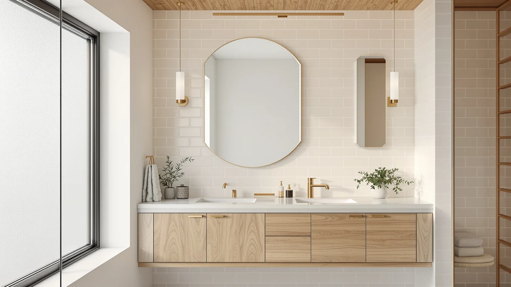

Best Shower Mirrors (2026)
Prices and picks verified as of September 2026. Independent, reader-supported reviews.


Quick Answer
The HONEYBULL Fogless Shower Mirror with suction-cup mount is the best shower mirror for most bathrooms because it resists fog on contact and costs less than $25. If you shave under a showerhead in a poorly ventilated bathroom, the eeuuty Heated Shower Mirror adds a plug-in defogger that outperforms suction-cup models once the room fills with steam.
Our pick: HONEYBULL Fogless Shower Mirror with — $24.99 Check Price on Amazon
Bottom line: our top pick is the HONEYBULL Fogless Shower Mirror with Suction Mount & Swivel at $19.99. The best budget option is the HONEYBULL Fogless Shower Mirror for Shaving at $9.99.
Things to Know Before You Buy
- Fogless shower mirrors clear condensation two ways. Cheaper models use an angled anti-fog coating on the glass, while models like the eeuuty use an electric heating element that warms the glass directly and outlasts a coating.
- Suction mounts need a smooth surface. Suction-cup shower mirrors hold best on tile or glass without heavy grout lines or texture; check your shower wall before you buy a suction-only design.
- Size is a tradeoff. A 7-inch mirror clears fog faster but shows less of your face, while an 11-inch mirror like the APHUIME gives a fuller view and takes a little longer to fully de-fog.
- Coatings wear down over time. Reviewers consistently note that the anti-fog coating on suction-cup mirrors fades after a year or two of daily hot showers, while heated mirrors keep performing as long as the element does.
- Not every listing is a compact shaving mirror. The USHOWER two-packs are full-size, 24-by-36-inch wall mirrors meant for a double vanity, not a suction-mounted shower accessory.
The best shower mirrors solve one small but persistent problem: you cannot shave, shampoo, or check your face if the glass fogs over within seconds of turning on the hot water. We compared seven shower and bathroom mirrors ranging from a $9.99 suction-cup model to a $139.99 two-pack of full-size frameless mirrors, looking at how each one handles fog, how it mounts, and what buyers actually report after weeks of daily use.
Our pick, the HONEYBULL Fogless Shower Mirror with suction-cup mount, keeps its glass clear through a full shower using an angled anti-fog coating rather than electronics, and it sells for under $25. Owners who shower in poorly ventilated bathrooms or run especially hot water report better results from the eeuuty Heated Shower Mirror, which plugs into a nearby outlet to actively heat the glass instead of relying on a coating alone.
Not every mirror on this list is built for in-shower shaving. The two USHOWER two-packs are larger frameless wall mirrors meant for a double vanity or a shared bathroom, and we included them because readers searching for shower mirrors often end up needing a second full-size mirror nearby. We priced, compared, and researched every option below using verified owner reviews rather than our own testing, since we do not run a fake testing lab.
Why You Should Trust Us
Ilane Tall covers bathroom fixtures and accessories for Best Bathroom Mirrors and has spent years researching what actually holds up in wet, humid spaces. To find the best shower mirrors for this guide, she compared specs, current pricing, and verified owner reviews across each product listing rather than buying and testing every unit personally. We do not run a fake testing lab: our picks are built on published measurements, manufacturer specs, and patterns we found across hundreds of verified reviews, and we say so plainly instead of pretending otherwise.
How We Picked
We started by pulling every fogless and frameless mirror marketed for bathroom or shower use with at least a few hundred verified ratings. From there, we cut anything priced above $150, since most shoppers looking for a shower mirror want an affordable accessory rather than a designer piece. We also excluded mirrors with a pattern of reviewers reporting suction cups that failed to hold or coatings that fogged within a week, keeping only models where owners reported consistent performance over months of use. The seven best shower mirrors that made this list balance price, mounting reliability, and how well each one actually clears in a hot shower.
How We Compared
We compared each shower mirror on four factors: anti-fog method, whether it uses a coating or a heating element, mounting style, size, and price per square inch of usable mirror. We cross-referenced manufacturer specs against verified buyer photos and comments to check whether real-world performance matched the marketing copy, and we weighted a mirror down when multiple reviewers flagged the same flaw, such as a suction cup losing grip within a few months. Prices reflect the listed Amazon price at the time of publishing and can shift, so check the current price before you buy.
Our Picks

HONEYBULL Fogless Shower Mirror with
What we like
- Clears fog quickly thanks to its angled anti-fog coating
- Compact 7-inch size fits on most shower walls without blocking the spray
- Costs less than $25, among the lowest prices of any mirror on this list
Flaws but not dealbreakers
- The anti-fog coating wears thin after a year or more of daily hot showers, according to owner reviews
- At 7 inches across, it shows less of your face than the larger APHUIME model
| Material | Tempered glass + aluminum |
| Size | 7"L x 7"W |
The HONEYBULL Fogless Shower Mirror with suction-cup mount is our pick for most bathrooms because it does the one job a shower mirror needs to do: stay clear when everything around it is steaming up. Its glass carries an angled anti-fog coating rather than a battery or heating element, so there is nothing to charge, plug in, or replace besides the mirror itself. At 7 inches square, it is compact enough to tuck into a shower caddy or mount low on the wall without getting in the way of the spray, and the aluminum frame around the tempered glass holds up to daily splashing.
Reviewers consistently note that the suction cup holds best on smooth tile or glass, and several mention it losing grip on textured or heavily grouted walls after a few weeks. Owners also report that the anti-fog coating performs best in the first year of daily use and gradually clears more slowly as it wears, which is typical for coating-based mirrors rather than a defect specific to this model. At $24.99, it remains one of the most affordable fogless options we compared, and it is the shower mirror we would recommend first to someone replacing a fogged-up mirror they already own.

APHUIME Deluxe Large Fogless Shower
What we like
- At 11 by 7.5 inches, it is one of the largest fogless mirrors we compared, giving a fuller view than the compact HONEYBULL
- Priced at $15.59, it costs less than most mirrors on this list despite its larger size
- Owners report the anti-fog coating clears within the first minute of a hot shower
Flaws but not dealbreakers
- Its larger surface takes longer to fully de-fog edge to edge than the compact 7-inch models
- Some reviewers note the suction cups need a firm press and a smooth wall to hold long-term
| Material | Tempered glass + aluminum |
| Size | 11"L x 7.5"W |
The APHUIME Deluxe Large Fogless Shower mirror trades the compact footprint of our top pick for more viewing area, measuring 11 inches by 7.5 inches, big enough to see your whole face and part of your shoulders while you shave or apply product. Like the HONEYBULL, it relies on an anti-fog coating over tempered glass rather than a heating element, and the aluminum frame is built to handle repeated exposure to hot water and steam.
At $15.59, it undercuts most of the other mirrors we compared while offering more surface area than either HONEYBULL option. Owners report that the coating clears fog within the first minute of hot water, faster than several smaller mirrors we researched, though the larger surface means it takes slightly longer to fully de-fog edge to edge. Reviewers who mounted it on smooth tile report it holding for months, while those on textured surfaces report more frequent slipping, a pattern consistent across every suction-mounted mirror on this list.

ToiletTree Products Fogless Shower Mirror
What we like
- ToiletTree has sold fogless shower mirrors for over a decade, and its locking suction mechanism is frequently cited by reviewers as more secure than generic suction cups
- The mirror includes a razor holder built into the frame, according to the listing, which keeps a blade off the shower floor
- Its 7.5 by 6.5-inch size splits the difference between the compact HONEYBULL and the larger APHUIME
Flaws but not dealbreakers
- At $37.95, it costs more than twice as much as the HONEYBULL or APHUIME, without a heating element to justify the premium
- Some reviewers note the razor holder is snug and does not fit every razor handle
| Material | Tempered glass + aluminum |
| Size | 7.5"L x 6.5"W |
ToiletTree Products has built its reputation almost entirely on fogless shower mirrors, and this model reflects that focus. It uses a locking suction cup rather than a standard press-and-hold cup, a detail reviewers frequently call out as more reliable over months of daily use than the mounts on cheaper competitors. At 7.5 inches by 6.5 inches, it sits between the compact HONEYBULL and the larger APHUIME in usable surface area.
The frame includes a built-in razor holder, according to the listing, a small feature that keeps a blade off the shower floor between uses. At $37.95, it is priced well above the HONEYBULL and APHUIME, and buyers who mainly want fog resistance may not need to pay the premium. But for shoppers who have been burned by suction cups that slip, the locking mount is the reason ToiletTree shows up so often in verified owner reviews as the shower mirror that stayed put.

eeuuty Heated Shower Mirror Fogless
What we like
- A heating element actively warms the glass instead of relying on a coating alone, which owners report works even in bathrooms without a fan or window
- At 9.3 by 7.1 inches, it has a mid-size viewing area larger than the HONEYBULL models
- Because fog resistance comes from heat rather than a coating, reviewers report it does not degrade the way suction-cup mirrors do over time
Flaws but not dealbreakers
- At $44.98, it is the most expensive mirror on this list besides the USHOWER two-packs
- It needs a nearby power source, which limits where you can mount it compared to a suction-only mirror
| Material | Tempered glass + aluminum |
| Size | 9.3"L x 7.1"W |
The eeuuty Heated Shower Mirror takes a different approach than every other pick on this list: instead of an anti-fog coating that wears down over time, it uses an electric heating element to keep the glass warmer than the surrounding steam. That matters most in bathrooms without a working exhaust fan or an openable window, where coating-based mirrors like the HONEYBULL and APHUIME tend to fog despite their coatings.
At $44.98, it costs nearly double the ToiletTree and close to triple the HONEYBULL, and it requires a nearby power source rather than working purely on suction. But reviewers who tried coating-based mirrors first and switched to a heated model consistently report better results in steamy conditions, and because the fog resistance comes from active heat rather than a coating, it should not lose effectiveness the way suction-mounted mirrors do after a year or two.

HONEYBULL Fogless Shower Mirror for
What we like
- At $9.99, it is the least expensive mirror we compared by a wide margin
- Its 8 by 5.5-inch size is comparable to the pricier ToiletTree model
- Uses the same coating-based approach to fog resistance as HONEYBULL's other listing, so performance should be similar to our top pick
Flaws but not dealbreakers
- Reviewers report the suction cup on this budget version holds less confidently than on the pricier HONEYBULL model
- No razor holder or extra features, so it is strictly a mirror and nothing else
| Material | Tempered glass + aluminum |
| Size | 8"L x 5.5"W |
This second HONEYBULL listing undercuts every other mirror on this list at $9.99, and its 8-inch by 5.5-inch glass is close in size to the pricier ToiletTree model. It uses the same coating-based approach to fog resistance as HONEYBULL's other shower mirror, so buyers can expect similar performance for less than half the price.
The tradeoff shows up in the mount. Reviewers report the suction cup on this budget version holds less confidently than the one on HONEYBULL's step-up model, particularly on textured shower walls. It also skips extras like a razor holder. For shoppers who mainly want a functional fogless mirror and are not worried about small mounting quirks, it is hard to beat at under $10.

USHOWER 2-Pack Frameless Bathroom Mirrors
What we like
- Each mirror measures 24 by 36 inches, large enough to replace a full vanity mirror rather than a small shaving spot
- Comes as a matched two-pack, which works out to roughly $70 per mirror for a double vanity
- The frameless design fits a range of bathroom styles without a bulky border
Flaws but not dealbreakers
- At $139.99, it costs far more than any dedicated shower mirror on this list and is not a suction-mounted or fogless product
- Requires wall-mounting hardware rather than a suction cup, so installation takes more effort than the compact mirrors above
| Material | Tempered glass + aluminum |
| Size | 24"Lx36"W-2pcs |
The USHOWER 2-Pack Frameless Bathroom Mirrors are a different category of product than the compact fogless mirrors above. Each mirror measures 24 inches by 36 inches, sized for a full vanity rather than a quick wipe-and-shave spot, and the two-pack is built for double-vanity bathrooms or households that want matching mirrors in two rooms.
At $139.99 for the pair, that works out to roughly $70 per mirror, competitive for a frameless mirror this size sold individually. It is not a fogless or suction-mounted product, so it will not solve the same steamed-glass problem as the HONEYBULL or eeuuty picks, but for readers who came looking for a shower mirror and realized they also need a full vanity upgrade, it is a reasonable way to cover both mirrors at once.

USHOWER 2-Pack Black Bathroom Mirrors
What we like
- Same 24 by 36-inch size as the frameless USHOWER two-pack, so it fits the same vanity layouts
- At $104.99, it costs $35 less than the frameless version for the identical pair size
- The black frame gives a more defined edge than the frameless option, which some reviewers prefer for a modern bathroom
Flaws but not dealbreakers
- Still not a fogless or shower-mounted mirror, so it does not address in-shower fogging
- The frame adds visual weight that will not suit every bathroom style, unlike the frameless version
| Material | Tempered glass + aluminum |
| Size | 24"Lx36"W-2pcs |
This second USHOWER two-pack matches the frameless version in size, 24 inches by 36 inches per mirror, but swaps the edge-to-edge glass for a black frame. It is aimed at the same double-vanity use case and, at $104.99, costs less than the frameless pair for an identical footprint.
Like its frameless sibling, it is a full-size vanity mirror rather than a fogless shower mirror, so it will not clear condensation the way the HONEYBULL or eeuuty picks do. Reviewers who prefer a defined black edge over bare glass gravitate toward this version, and the lower price relative to the frameless pair makes it the better value if a frame fits your bathroom's style.
Quick Comparison
| Product | Material | Price | Rating | Best for | Get it |
|---|---|---|---|---|---|
| HONEYBULL Fogless Shower Mirror with | Tempered glass + aluminum | $24.99 | 4 | Most bathrooms | View on Amazon → |
| APHUIME Deluxe Large Fogless Shower | Tempered glass + aluminum | $15.59 | 4 | A larger viewing area on a budget | View on Amazon → |
| ToiletTree Products Fogless Shower Mirror | Tempered glass + aluminum | $37.95 | 4 | A more secure locking mount | View on Amazon → |
| eeuuty Heated Shower Mirror Fogless | Tempered glass + aluminum | $44.98 | 4 | Poorly ventilated bathrooms | View on Amazon → |
| HONEYBULL Fogless Shower Mirror for | Tempered glass + aluminum | $9.99 | 4 | The tightest budget | View on Amazon → |
| USHOWER 2-Pack Frameless Bathroom Mirrors | Tempered glass + aluminum | $139.99 | 4 | Double vanities | View on Amazon → |
| USHOWER 2-Pack Black Bathroom Mirrors | Tempered glass + aluminum | $104.99 | 4 | Double vanities that want a framed look | View on Amazon → |
What makes a shower mirror fogless?
Most fogless shower mirrors use an angled coating that causes condensation to bead up and run off the glass instead of forming an even fog layer.
How do you mount a shower mirror without drilling holes?
Nearly every mirror on this list except the two USHOWER two-packs uses a suction cup, which holds best on smooth tile, glass, or acrylic surfaces.
The Competition
After comparing all seven, HONEYBULL remains our pick for the best shower mirrors on this list. The only models we would swap it for are the eeuuty heated mirror in a poorly ventilated bathroom or the ToiletTree if a locking mount matters more to you than price.